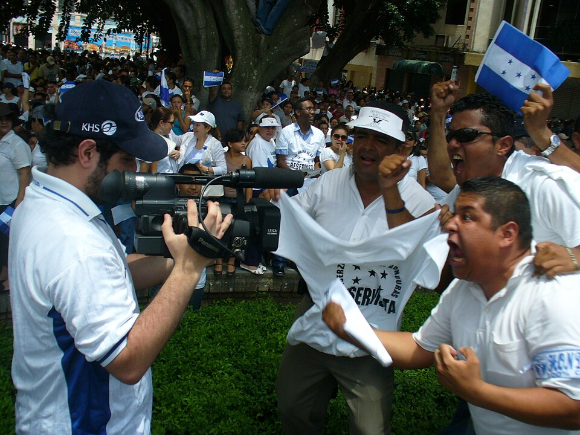

A42-POL-020 // HISTORICAL CLAIM REVIEW
Honduras's 2009 Removal of Manuel Zelaya
Assessment: The army's forcible removal and exile of a sitting president was a coup, even though other institutions participated in the subsequent succession.


The precise allegation
Honduran soldiers removed President Manuel Zelaya from his home and flew him into exile on June 28, 2009, after a Supreme Court warrant and an escalating constitutional dispute. Congress later voted to remove him. The military's forced exile was a coup in ordinary political usage; whether every domestic step was illegal, and the extent of US foreknowledge, are more specific and disputed questions.
Chronology and political context
Zelaya's proposed nonbinding poll on convening a constituent assembly was opposed by Congress, courts, and military leaders. The Supreme Court ordered his arrest; soldiers carried it out but took him abroad rather than presenting him to Honduran authorities. Congress read a disputed resignation letter, declared him removed, and installed Roberto Micheletti. International bodies condemned the seizure and demanded Zelaya's restoration.
Primary historical record
The Honduran Constitution, Supreme Court orders, congressional resolutions, the Organization of American States' statements, and the UN General Assembly record document the sequence. The Supreme Court had issued an arrest warrant, but no order authorized expelling Zelaya from the country. The military's handling of the warrant and Congress's procedure therefore cannot be collapsed into a single uncontested constitutional act.
Corroboration and contrary evidence
The OAS, UN, and Inter-American Commission on Human Rights treated the removal as an unconstitutional interruption of democratic order and documented subsequent abuses. Honduran institutions argued that Zelaya had violated constitutional limits. The distinction between a lawful arrest order and forced exile is supported by the record; claims that the United States engineered the operation are not established by public evidence.
What remains uncertain
The complete chain of military planning, the precise advice from the Supreme Court, and what US officials knew before the operation remain incompletely documented. Zelaya's own conduct and the legality of his proposed consultation were contested. The political crisis involved genuine institutional conflict, but the elected president's removal by the armed forces cannot be rendered lawful merely by citing domestic opposition.
Calibrated verdict
The army's forcible removal and exile of a sitting president was a coup, even though other institutions participated in the subsequent succession. There is strong evidence that the action violated democratic constitutional order; the exact domestic legality of each preceding decision is debated. US diplomatic influence and later policy deserve scrutiny, but direct US command is unproven.
What evidence could change this assessment
Authenticated military orders, Supreme Court deliberations, and contemporaneous diplomatic communications could clarify who authorized exile and what outside governments knew. A complete constitutional record might refine the legality of Zelaya's poll and Congress's vote. Evidence of prior US tasking would change foreign attribution; evidence of only post-event diplomacy would support a narrower account.
Sources and source limits
- Organization of American States — Honduras crisis resolutions and reportsOAS records document regional response and suspension; institutional record reflects member-state diplomacy, not a Honduran criminal investigation.
- Inter-American Commission on Human Rights — Honduras: Human Rights and the Coup d'EtatOn-the-ground human-rights report documents the interruption and repression; its mandate emphasizes rights impacts, not every constitutional issue.
- Congressional Research Service — Honduras: Political Crisis and U.S. RelationsSummarizes the political and diplomatic record for Congress; a policy report, not a forensic account of military planning.